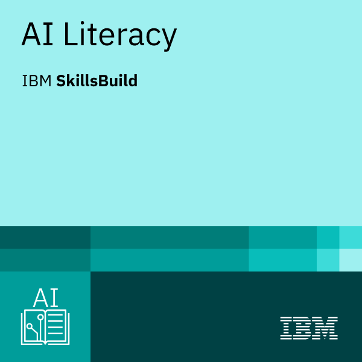

CITS – Computer Hardware & Network Maintenance (CHNM)
NSTI Kanpur
Hello, I am
B.Tech graduate training at NSTI Kanpur, building practical skills in hardware, networking and troubleshooting.
I am a B.Tech (Information Technology) graduate from Auraiya, Uttar Pradesh, currently pursuing CITS in Computer Hardware and Network Maintenance (CHNM) at NSTI Kanpur. I am interested in hardware, networking and the use of AI in technical maintenance work.
I have completed the AI Literacy course from IBM SkillsBuild and worked on a prototype project on AI-based fault detection for Railway S&T systems. I am self-motivated, hardworking and eager to learn.
NSTI Kanpur
Government Engineering College, Ambedkar Nagar, Uttar Pradesh – 224122 (AKTU, Lucknow)
Board of Technical Education, Uttar Pradesh
UP Board, Allahabad
UP Board, Allahabad
A prototype AI assistant that accepts structured equipment symptoms and maintenance data, detects abnormal conditions, classifies likely faults, estimates priority, explains its reasoning and recommends inspection actions for authorised S&T maintenance staff.
Uses labelled, authorised and anonymised maintenance records. Performance can be measured with accuracy, precision, recall, F1-score and a confusion matrix.
Project planning, identifying Railway signal and telecom problems, designing the repair management workflow, preparing AI prompts for troubleshooting, and organizing project requirements and documentation.
NSTI Kanpur · Session 2026–27
Practical training in Computer Hardware and Network Maintenance.

IBM SkillsBuild · 2026
Verify CertificateFeel free to reach out for opportunities or collaboration.